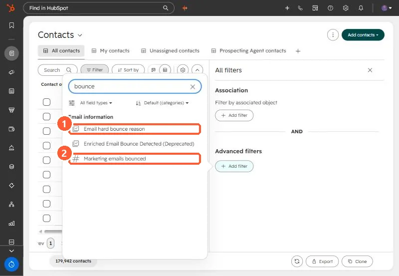
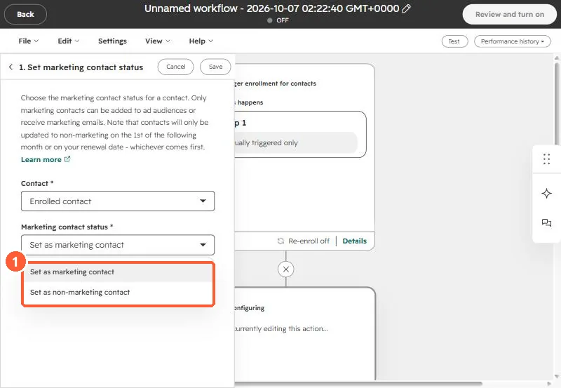

Short answer
Filter contacts on Email hard bounce reason or Marketing emails bounced, then set them as non-marketing from the view's More menu. HubSpot's Clean up contacts tool under Account & Billing, Marketing Contacts lists unsubscribed and bounced groups by default, so it is the fastest path when you have Marketing Hub. On an IT services client, suppressing the bounced contacts that were still marketable was the first cleanup item, because it protects deliverability for every send. Non-marketing changes take effect on the next update date.
1. Find them
In Contacts, open Advanced filters and search the properties for "bounce".


Combine one of those with Marketing contact status is Marketing contact to get the group you are paying for.
2. Switch them off
- From the view: select the contacts, then More, Set as non-marketing contacts.
- Clean up contacts: Account & Billing, Marketing Contacts, Clean up contacts. HubSpot shows unsubscribed and bounced groups by default. My demo has no Marketing Hub contact tier, so that page only offers Marketing Hub there.
- Workflow: enroll contacts when a bounce reason becomes known and use the action below.


3. Why it was first on the list
On the client's portal, the bounced group was large and still marketable, so every campaign kept trying addresses that would never deliver. Setting them non-marketing fixed the send lists and the contact count together. Deleting test records was second, covered in delete test records.